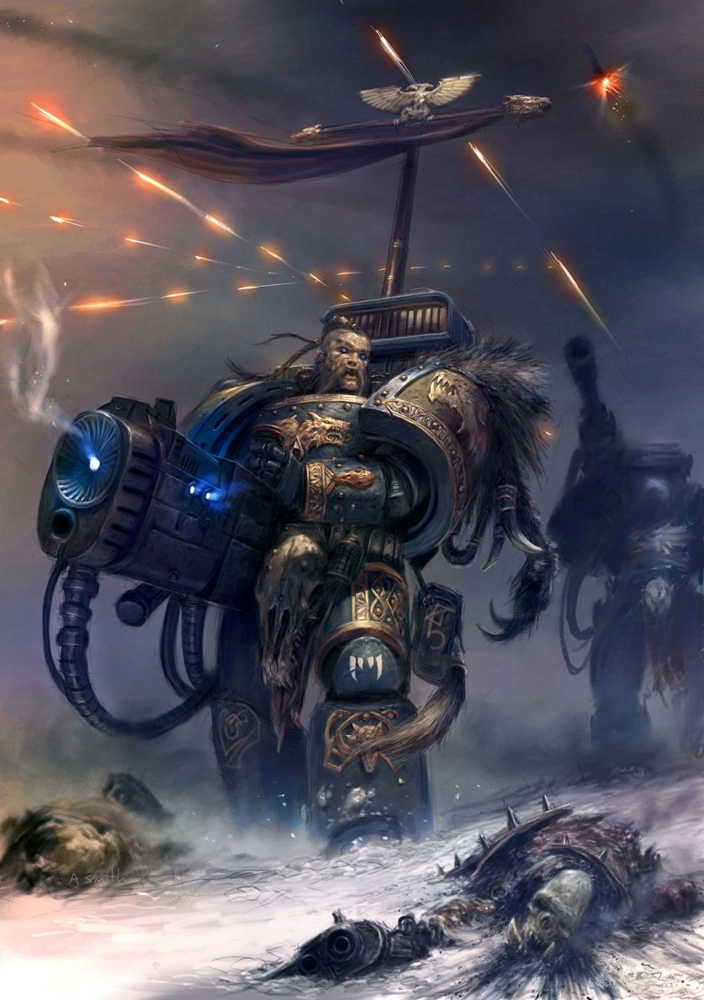

Plague of Unbelief
| Plague of Unbelief | |
|---|---|
| Part of the Age of Apostasy | |
 A congregation of the 36th millennium. Bucharis held his empire by the pulpit as much as by the gun | |
| Date | c. 300–310.M36[a] |
| Location | The worlds west and south-west of Terra, from Gathalamor towards Bakka and Hydraphur; Fenris; Chiros |
| Result | Imperial victory. Bucharis killed by his own subjects; his realm restored to the High Lords; the Ecclesiarchy's missions re-established; Inquisitorial purge |
| Belligerents | |
| Loyalists | The Apostate Cardinal's realm |
| Commanders and leaders | |
| ‡ Executed or murdered | |
| Strength | |
| Casualties and losses | |
| Millions of Fenrisians killed at the siege of the Fang; three-quarters of Colcha's rising dead; Dolan Chirosius tortured to death | Nearly half the rebel fleet destroyed at Fenris; the army lost on the ice and in the snows of Asaheim; Bucharis torn apart by a mob |
| Methalor destroyed its own principal hive; Chiros and Colcha laid waste; a thousand worlds in revolt against their overseers | |
The Plague of Unbelief was the rebellion of Bucharis, the Apostate Cardinal of Gathalamor, in the 36th millennium. It is counted as the second and last part of the Age of Apostasy, although it took place some decades after the death of Goge Vandire and the elevation of Sebastian Thor as Ecclesiarch. Bucharis carved an empire of a thousand worlds out of the Imperium's western regions, hidden from Terra by Warp storms, and ruled it as the head of his own church.[1]
Bucharis's undoing began at Fenris, where his armies besieged the fortress of the Space Wolves for three years and were destroyed. On the world of Chiros his troops were defeated by a whole population of hunters, and the news set off a chain of risings. The Ecclesiarchy sent the Confessor Dolan Chirosius to demand his surrender. Bucharis tortured him to death, and the martyrdom of the Confessor brought the whole of his empire into revolt. Bucharis was torn apart by a mob as he tried to flee Gathalamor.[1]
The Ordo Malleus master Galan Noirgrim later called it the gravest crisis of faith the Imperium had suffered since the Horus Heresy. Its name refers not to a disease but to the doctrine that Bucharis preached, which taught his subjects to care only for themselves.[2]
Background
[edit]The Age of Apostasy had left the Imperium in disorder. Warp storms had multiplied in the early 36th millennium, cutting off whole regions, and a host of false prophets had arisen in them, some little more than bandit chiefs and others masters of whole worlds. The overthrow of Vandire and the reforms of Sebastian Thor were slow to reach the outer worlds, and in places they did not reach them at all.[1]
Bucharis held a small diocese of the Ecclesiarchy on the Cardinal world of Gathalamor, to the galactic south-west of Terra. Gathalamor was not rich, and much of its population lived in poverty. Bucharis was jealous of the wealth of his fellow cardinals and vowed to build one of the greatest temples to the Emperor in the galaxy. To do it he treated his people as slaves.[1]
Rise of the Apostate
[edit]Early conquests
[edit]Gathalamor alone could not supply what Bucharis needed. With a force of thugs and cutthroats he seized the nearby world of Rhanda, whose mines yielded the materials for his building and, through their sale across the sector, a great personal fortune. On Rhanda he met Admiral Sehalla, a flag officer of the Imperial Navy, and Colonel Gasto of the Rigellian XXV Regiment, who joined him. With their ships and soldiers he conquered fifty worlds in seven years.[1]
A great Warp storm covered the region and hid his conquests from Terra. When word of Thor's elevation reached him through his agents in the Ecclesiarchy, he used his control of the local fleet to stop the news from spreading. He announced instead that the Ecclesiarchy on Terra had fallen to traitors and heretics, declared himself the mouth of the Emperor, as Vandire had done, and made Gathalamor the centre of the faith.[1]
The doctrine of Bucharis
[edit]Bucharis was an orator of great power, and his sermons were heard far beyond the worlds he ruled. He taught that each person should look only to himself, that the poor and the unemployed were less than human and deserved no help, and that only the strong and prosperous would survive. His worlds became places where mobs fought each other, where petty nobles ruled with their own wealth, and where families split over the spoils. Those who rose by violence and caught his eye were rewarded with power and set to command bands of mercenaries. The Ecclesiarchy later called the doctrine the Plague of Unbelief, for it had made the faith of the Emperor into a creed of selfishness.[2]
Expansion
[edit]Bucharis was cautious of Terra. He drove his conquests to the galactic north, stopping short of Bakka in the south lest Sehalla's fleet draw attention to his young realm, and keeping well away from Cadia and the Eye of Terror in the north. Three more regiments of the Imperial Guard went over to him. When he moved on Hydraphur, the fleet of the Segmentum Pacificus accepted his claims and bowed to him. With these forces he was able to strike at the heart of the Imperium.[1][b]
The siege of Fenris
[edit]
Bucharis's fatal mistake was to advance into the region protected by the Space Wolves. His fleet, emerging from the Warp, met the Space Wolf strike cruiser Claw of Russ, which destroyed a rebel cruiser and a transport and escaped. Bucharis took the encounter for chance and pressed on. In the fifth system he entered he found Fenris itself, and the Space Wolf fleet attacked his ships the moment they left the Warp.[3]

The Space Wolves were outnumbered. They tore a hole in the rebel fleet, withdrew and turned to raiding, which kept about two-thirds of Bucharis's ships occupied. The rest landed an army on the northern ice. The storms of Fenris and the ground batteries destroyed many of the landers. Captured Fenrisians were set to build roads across the glaciers, and several regiments had to be kept back from the front to guard them. Bucharis conquered most of the planet and laid siege to The Fang.[3]
For three years his guns bombarded the fortress and his troops assaulted its walls. The Space Wolves sallied to destroy the siege works and the great cannon, Wolf Scouts cut the supply lines, Blood Claws fought through the tunnels beneath the mountains and Long Fangs brought down mountainsides on the armoured columns. Bucharis offered fortunes to the first man to breach the walls and drew in troops from across his empire, until even the garrison of Gathalamor was reduced to a quarter of its strength. Millions died.[3]
The siege ended when a fleet of Space Wolf battle barges appeared at the edge of the system. Nearly half the rebel fleet was destroyed in the first attack, and Admiral Sehalla ordered a retreat. The Space Wolves under Kyrl Grimblood landed and drove the rebels from the mountains. Those who escaped died in the snows of Asaheim, hunted by the wolf packs. Bucharis escaped by shuttle, was picked up by Sehalla, and withdrew to secure the rest of his realm.[3]
The risings
[edit]Chiros
[edit]Bucharis's other armies, meanwhile, were moving west. At the forest world of Chiros, a world of a few million people who lived by exporting furs, elixirs and luxuries, they were stopped. The commander there had spared the planet from orbital bombardment, hoping that Bucharis would retire to it, and Bucharis approved and sent reinforcements. The commander then surrendered. Bucharis's agents reported that the invaders had faced not a militia but the whole population of the planet, each person armed with a hunting rifle. Millions of marksmen had destroyed wave after wave of troops in ambushes, and a suicide squad had blown up the centre of the rebel camp.[1]
Revolt
[edit]The news of Chiros spread. The mining world of Guryan rose first, its miners strangling their guards with their shackles, and Dolsia and Vaust followed. On Colcha, where Bucharis had trapped and destroyed a small loyalist fleet, a single shuttle landed, and a year later the population rose against Governor Fredreich Khust. They burned their fields, stormed the barracks, dammed rivers to flood the towns where his troops were quartered and stampeded herds of gorbeasts into his tank companies, losing three-quarters of their own number in the process. Lima Rogan, Troudor and many other worlds followed. Bucharis's treasury emptied, his soldiers deserted and his commanders quarrelled. Finally Methalor, the world nearest Gathalamor, rose and destroyed its own principal hive by overloading its geothermal grid.[1]
Confessor Dolan
[edit]After the fall of Methalor an envoy came to the Cardinal Palace on Gathalamor and announced himself as the messenger of the Confessor Dolan Chirosius. He demanded that Bucharis surrender to the Ecclesiarchy, renounce his heresies and throw himself on the Emperor's mercy. Bucharis had the messenger's body nailed to the palace gates.[4]
The Confessor's shuttle was boarded as it approached Gathalamor. Bucharis meant to show his people their would-be saviour in chains. Dolan was dragged across the continent for six months, whipped, stoned and hung with weighted hooks, but the crowds neither cheered nor condemned. A show trial followed, lasting five months, in which Dolan conducted his own defence. He freely admitted that he had raised the rebellious worlds, and he used the trial to speak to the people. Bucharis then had him tortured for eight months. When the Confessor died his face was calm, and those who wept at the sight were executed for heresy. His body was thrown from the palace walls for the dogs, and it disappeared before they could reach it.[4]
Fall of Bucharis
[edit]When the Confessor's death was announced, the populations of a thousand worlds rose at once against their overseers. On Gathalamor traitors within the palace opened its gates. Bucharis fled through tunnels to the spaceport, but as he reached his shuttle the crowds overran the electric fences by piling their bodies against them, and he was torn to pieces. Nothing of him was recovered but scattered ashes.[1]
Aftermath
[edit]The Inquisition purged the Apostate's former realm and sent tens of thousands of his servants to the Emperor's justice. The High Lords restored their authority over the region, and the Ecclesiarchy, now reformed by Thor, set up thousands of missions on Bucharis's worlds to restore the true teaching of the Imperial Cult. With the end of the rebellion the Age of Apostasy is held to have closed.[1]
Dolan Chirosius was venerated as the Great Confessor and is honoured as an Imperial Saint. His example of faith under torment is held up by the Ministorum as the model of the martyr's death.[3]
Timeline
[edit]| Date | Event | Theatre |
|---|---|---|
| M36[c] | Bucharis seizes the mining world of Rhanda and wins Sehalla and Gasto to his cause | Rhanda |
| M36[d] | Bucharis conquers fifty worlds in seven years, hiding his realm behind a Warp storm, and proclaims the Ecclesiarchy on Terra fallen | Gathalamor |
| M36[e] | The fleet of the Segmentum Pacificus accepts Bucharis at Hydraphur | Hydraphur |
| M36[f] | Bucharis's fleet meets the Claw of Russ at Fenris and his army lands on the northern ice | Fenris |
| M36[g] | The siege of The Fang begins and lasts three years, with the Space Wolves raiding the siege lines | Fenris |
| M36[h] | A Space Wolf fleet under Kyrl Grimblood arrives, destroys nearly half the rebel fleet and ends the siege; Bucharis escapes by shuttle | Fenris |
| M36[i] | The forest world of Chiros destroys Bucharis's army with the whole population armed with hunting rifles | Chiros |
| M36[j] | Revolt spreads from Guryan to Dolsia, Vaust and Colcha; Methalor destroys its own principal hive | Methalor |
| M36[k] | Bucharis has the messenger of the Confessor Dolan Chirosius nailed to the Cardinal Palace gates | Gathalamor |
| M36[l] | Dolan is dragged, tried and tortured to death in the Cardinal Palace; his death brings the rebel worlds to rising | Gathalamor |
| M36[m] | The traitors within Gathalamor's palace open its gates, and Bucharis is torn apart by a mob at the spaceport | Gathalamor |
| Late M36[n] | The Inquisition purges the former realm and the Age of Apostasy is held to close with the rebellion's end | Imperium of Mankind |
See also
[edit]Notes
[edit]- ^ The Administratum's register records the Plague of Unbelief under 310.M36. Ecclesiarchy histories date it only as "some decades" after the elevation of Sebastian Thor, which the Administratum places in 288.M36. The two are consistent. Bucharis's conquests began some years before the war reached its height.
- ^ Some Inquisitorial authorities have suggested that the Warp storms that concealed the Apostate's realm were raised by the Ruinous Powers to complete the division of the Imperium. There is no record that Bucharis knew of any such design.
- ^ Estimated; the sources date the rebellion only to the 36th millennium, and several dates within it are inferred from the order of events.
- ^ Estimated; the sources date the rebellion only to the 36th millennium, and several dates within it are inferred from the order of events.
- ^ Estimated; the sources date the rebellion only to the 36th millennium, and several dates within it are inferred from the order of events.
- ^ Estimated; the sources date the rebellion only to the 36th millennium, and several dates within it are inferred from the order of events.
- ^ Estimated; the sources date the rebellion only to the 36th millennium, and several dates within it are inferred from the order of events.
- ^ Estimated; the sources date the rebellion only to the 36th millennium, and several dates within it are inferred from the order of events.
- ^ Estimated; the sources date the rebellion only to the 36th millennium, and several dates within it are inferred from the order of events.
- ^ Estimated; the sources date the rebellion only to the 36th millennium, and several dates within it are inferred from the order of events.
- ^ Estimated; the sources date the rebellion only to the 36th millennium, and several dates within it are inferred from the order of events.
- ^ Estimated; the sources date the rebellion only to the 36th millennium, and several dates within it are inferred from the order of events.
- ^ Estimated; the sources date the rebellion only to the 36th millennium, and several dates within it are inferred from the order of events.
- ^ Estimated; the sources date the rebellion only to the 36th millennium, and several dates within it are inferred from the order of events.
References
[edit]- ^ a b c d e f g h i j k Liber Ecclesiasticus (M37). Adeptus Ministorum. Chapter on the Plague of Unbelief.
- ^ a b Noirgrim, Galan (M37). The Abominatus. Ordo Malleus (sealed).
- ^ a b c d e Saga of the Fang (M36). Space Wolves archive, Fenris.
- ^ a b The Passion of the Great Confessor (M36). Adeptus Ministorum, Gathalamor.